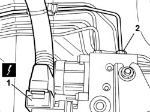
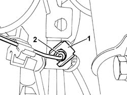
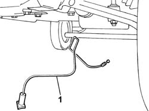

3340B55 CENTRAL BRAKE PIPE TO LH - R R
- Path
- Procedures > 33 BRAKING SYSTEM > 3340 ANTI-LOCK BRAKE SYSTEM (ABS) > 3340B ABS SYSTEM PIPES > 3340B55 CENTRAL BRAKE PIPE TO LH - R R
- Kind
- repair procedure (removal / refitting; the operation number is the code)
- Applies to
- all engines; all production periods
- Interactive page
- https://sloeber94.github.io/elrnDB-fDct/en/#/244001139
Applies to: all engines; all production periods
 Removing
Removing
 Refitting
Refitting- Position the vehicle on the lift.
- Disconnect the negative battery terminal.
Op. 7055B54 UNDER-ENGINE GUARD - R R
- Remove the protective cap from the bleed valve on the rear brake caliper.
- Connect the recovery device (pipe and reservoir) to the rear brake caliper bleed valve.
- Operate the brake pedal until the brake/clutch reservoir is drained.
1. Disconnect the electrical connection for the A.B.S. control unit.
 | Description | Connector |
|---|---|---|
1 | ABS control unit | M050 |
2. Undo the connector at the ABS hydraulic control unit.

Applies to: all engines; all production periods
1. Release the rigid pipe from the hydraulic control unit to the left front brake from the fastening springs.
2. Undo the connector between the rigid pipe from the hydraulic control unit to the left front brake and the flexible pipe to the front brakes.

Applies to: all engines; all production periods
Op. 7095E14 FRONT SUSPENSION SOUND INSULATION SHIELD (ONE) LEFT OR RIGHT - R.R.
1. Remove the rigid pipe from the hydraulic control unit to the left front brake.

Applies to: all engines; all production periods
Refitting
Removing- Steer the wheels to the left.
- Fit the rigid pipe from the hydraulic control unit to the left front brake.
- Screw in the rigid pipe from the hydraulic control unit to the left front brake at the ABS control unit without tightening it to torque.
- Screw in the rigid pipe from the hydraulic control unit to the left front brake at the connector with the flexible front brake pipe without tightening it to torque.
- Tighten the rigid pipe from the hydraulic control unit to the left front brake at the ABS control unit.
 | Value - daNm | Fastening | Component | Ø |
|---|---|---|---|---|
. | (ABS control unit) 1.2 - 2.2 | - | RIGID FRONT BRAKE PIPE/ABS CONTROL UNIT | M12 |
- Fit the metal spring on the connector between the rigid pipe from the hydraulic control unit to the left front brake and the flexible front brake pipe.
- Tighten the connector between the rigid pipe from the hydraulic control unit to the left front brake and the flexible front brake pipe.
| Value - daNm | Fastening | Component | Ø |
|---|---|---|---|---|
. | 1.2 -2.2 daNm | Nut | BRAKING SYSTEM PIPE CONNECTORS | M10x1 |
- Fit the rigid pipe from the hydraulic control unit to the left front brake with all the springs.
- Connect the electrical connection for the ABS control unit.
| Description | Connector |
|---|---|---|
. | ABS control unit | M050 |
Op. 7095E14 FRONT SUSPENSION SOUND INSULATION SHIELD (ONE) LEFT OR RIGHT - R.R.
- Fit the protective cap for the bleed valve on one of the front brake calipers.
Op. 0010T65 HYDRAULIC BRAKE SYSTEM BLEED AIR
Op. 7055B54 UNDER-ENGINE GUARD - R R
- Connect the negative battery terminal.
- Remove the vehicle from the lift.
- Test the operation of the braking system.